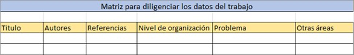
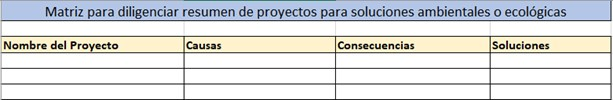
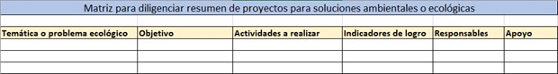

Taller 1. Introducción a la Ecología
Asignatura Ecología 1

[
Referencias bibliográficas sobre introducción a la ecología
- CAPÍTULO: Introduction to Ecology. De: Molles, M. C., Sher, A. A.(2019). Ecology: concepts & applications. McGraw-Hill. https://www-ebooks7-24-com.biblioteca.unimagdalena.edu.co/?il=9960&pg=24

- CAPÍTULO: Conceptos fundamentales en Ecología. De: Fernández Gama, D. (2017). Ecología. Pearson Educación. https://www-ebooks7-24-com.biblioteca.unimagdalena.edu.co/?il=7286&pg=21

- CAPÍTULO: Introducción. Ecología del Organismo al ecosistema. De: Rodríguez Martínez, J. (2016). Ecología (4a. ed.). Madrid, Mexico: Difusora Larousse - Ediciones Pirámide. https://elibro-net.biblioteca.unimagdalena.edu.co/es/ereader/unimagdalena/49165?page=21

- CAPÍTULO: The Nature of Ecology. De: Smith, T. M., Smith, R. L.(2015). Elements of ecology. Pearson Educación. https://www-ebooks7-24-com.biblioteca.unimagdalena.edu.co/?il=6804&pg=19

- CAPÍTULO: Definiciones, raíces y fundamento. De: Donato Rondón, J. C. (2015). Fundamentos de ecología: un enfoque ecosistémico. Bogotá, Universidad Nacional de Colombia. Recuperado de https://elibro-net.biblioteca.unimagdalena.edu.co/es/ereader/unimagdalena/129861?page=19.

- CAPÍTULO: ECOLOGIA: LA CIENCIA Y SU ORIGEN. De: Luis Fontana, J. (2015). Principios de ecología. Córdoba, Argentina: Editorial Brujas. Recuperado de: https://elibro-net.biblioteca.unimagdalena.edu.co/es/ereader/unimagdalena/78148?page=8.

- CAPÍTULO: Ecología y sus campos de estudio. De: Vázquez Conde, R. (2017). Ecología y medio ambiente. México, D.F, Mexico: Grupo Editorial Patria. Recuperado de https://elibro-net.biblioteca.unimagdalena.edu.co/es/ereader/unimagdalena/40505?page=15.

- CAPÍTULO: Introducción y antecedentes. De: Smith, T. M., Smith, R. L.(2007). Ecología. Pearson Educación. https://www-ebooks7-24-com.biblioteca.unimagdalena.edu.co/?il=3488&pg=24.
Introducción

[
La ecología es una disciplina de las ciencias que ha venido evolucionando de acuerdo a los retos ambientales que se presentan a diferentes escalas, en donde convergen problemáticas que fluctúan en espacio y tiempo. Ya no basta con analizar los elementos bióticos y abióticos que ineractúan en la naturaleza, devido a que la especie humana se convierte en un tensor relevante, que en su dinámica social, interviene de forma directa sobre los diferentes niveles de organización de la naturaleza. Es por ello que el presente taller se orienta hacia una reflexión profunda de cómo podemos intervenir en aspectos como la conservación, recuperación, rehabilitación, restauración, entre otros tecnicismos, de ambientes alterados ya sea por factores naturales (ej. variación climática o gradientes de altura y/o profundidad), eventos naturales de gran escala (ej. cambio climático) o tensores antrópicos (ej. ausencia de una cultura ambiental, de sostenibilidad o de conocimiento de procesos ecológicos).
Objetivo de la actividad

[
Generar competencias en como aplicamos elementos del contexto ecológico, sobre problemáticas ambientales de nuestro entorno, desde una mirada interdisciplinaria y sistémica.
1. Lecturas para la clase.
Basado en el capítulo de Rodríguez (2016). Ecología (4a. ed.), El capítulo se llama Introducción. Ecología: del organismo al ecosistema, que se encuentra en el siguiente enlace: https://elibro-net.biblioteca.unimagdalena.edu.co/es/ereader/unimagdalena/49165?page=21
Basado en el capítulo de Smith y Smith (2008). Elementos de Ecología (9a. ed.). El Capítulo se titula Naturaleza de la ecología y se encuentra en este enlace de la biblioteca: https://www-ebooks7-24-com.biblioteca.unimagdalena.edu.co/?il=3488&pg=24
Preparar las lecturas. Esta actividad tendrá una calificación por medio de la participación en la clase.
Basado en las lecturas introductorias y otras referencias bibliográficas revisadas, se requiere elaborar un mapa conceptual en donde se indique el campo de acción de la ecología y otras disciplinas de apoyo, que brindan respuesta a temas ecológicos o ambientales complejos
2. Trabajos ecológicos.
Revisar en fuentes confiables (google académico, revistas, libros de la biblioteca, páginas de internet, etc.), dos trabajos relacionados con un tema ecológico o ambiental. Diligenciar los siguientes aspectos:
Titulo y año del trabajo.
Autores del trabajo.
Referencia bibliográfica del trabajo.
Numerar el nivel de organización abordado (ej. poblaciones, comunidades, ambiente, …) y cómo se resolvió cada problema planteado. Esto puede organizarse en una tabla de dos columnas.
Elaborar un mapa conceptual o un flujograma, en el que relacionen a los dos trabajos analizados.
Además de la ecología, indique otras áreas del conocimiento evaluadas en el trabajo y su importancia para dar respuesta a las problemáticas abordadas.

3. Propuesta de proyecto.
Objetivo. Elaborar una propuesta de solución ante un problema ambiental o ecológica local (ej. Alguna cuenca de la ciudad, bahías aledañas, sector urbano, parques naturales cercanos, municipio de tu procedencia, etc.), aplicando los conceptos básicos de Ecología vistos en clase.
Integrantes. Máximo 4 estudiantes, que realizarán lo siguiente:
Discutirán y documentarán los problemas ambientales más importantes de nuestra ciudad o departamento y seleccionarán uno, que no coincida con el de los demás grupos.
Investigar y realizar un listado resumido de las causas y consecuencias de la problemática planteada, así como las posibles soluciones. Pueden apoyarse de la siguiente tabla:

- Diligenciar los siguientes aspectos, de acuerdo con la matriz que se muestra a continuación:
Temática o problema: ej. Contaminación del río Gaira en Santa Marta.
Objetivo: Objetivo general que se pretende.
Actividades: Listar las actividades que pueden dar solución al problema.
Indicadores: que sean medible, ej: protocolo para el diagnóstico de la contaminación en …
Responsables: Además de los estudiantes del grupo, que entidades piensan que pueden financiar este proyecto y hacerse responsables.
Apoyo: entidades que pueden apoyar en las actividades a realizar
